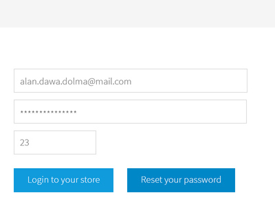

<!-- @include _header -->
<!-- $title Chapter 4: Design -->

<div class="row">
	<div class="w12">
		<div class="section">
			<h1><!-- $title --></h1>
			<p>In this chapter I will discuss my planning and design process for the graphical user interface of the application.</p>
		</div>
		
		<div class="section" id="inspiration">
			<h2>5.1 Inspiration</h2>
			<p>The first stage in the design process was to look at existing apps and trends to get an idea of what a modern, design-focused web application looks like as well as gauging my personal likes and dislikes.</p>

			<h3>Other web applications</h3>
			<p>Researching into other applications involved signing up for free accounts at many services to get a feel for their interfaces and process flows. While it would be more useful if these were the existing content strategy applications researched in the previous chapter none of them have a particularly design-focused aesthetic.</p>
			<p>Three of the applications I tested were particularly interesting:</p>
			<ul>
				<li>Layervault, an application for managing revisions to Photoshop files (<a href="https://layervault.com/">https://layervault.com/</a>)</li>
				<li>Iceber.gs, a Pinterest-like application for collecting design inspiration and ideas (<a href="https://iceber.gs/site">https://iceber.gs/site</a>)</li>
				<li>Basecamp, a project management application (<a href="http://basecamp.com/">Basecamp</a>)</li>
			</ul>
			<p><span class="more"></span></p>

			<h3>Moodboard</h3>
			<figure>
				<div class="image-grid">
					
					
					
					
					
					
					
					
					
					
					
					
					
					
					
					
					
					
					
					
					
					
					
					
					
				</div>
				<figcaption>Moodboard</figcaption>
			</figure>

			<h3>Design trends</h3>
			<p>... <span class="more"></span></p>

			<h3>For Scoop?</h3>
			<p></p>
			
			<h4>Typography</h4>
			<p>In a information-heavy web application like Scoop it's important to make sure that the data that's being displayed to the user is as clear as possible.</p>

			<p>All of these applications embrace the clear typography.</p>
		</div>

		<div class="section" id="proposed-features">
			<h2>5.3 Proposed features</h2>
			<p>In the previous chapters I discovered lots of different ways in which the app could proceed but it's important to refine and reduce the proposed number of features to ensure that the user can easy accomplish the key tasks <span class="cite" src="designing the obvious"></span>. This also has the side effect of helping to make the user interface simpler and easier to use by streamlining the number of elements that need to be displayed to the user.</p>
			<p>The following table was created to aim in the task of dividing the initial feature ideas into three categories: essential, nice to have and future:</p>
			<table>
				<thead>
					<tr>
						<th>Essential</th>
						<th>Nice to have</th>
						<th>Future</th>
					</tr>
				</thead>
				<tbody>
					<tr>
						<td>
							<p>Find all the pages of a website based on it's url</p>
							<p>Add annotations to each page</p>
							<p>Export a report showing the results of the content audit</p>
						</td>
						<td>
							<p>Google Analytics integration to return statistics for each page</p>
						</td>
						<td>
							<p>?</p>
						</td>
					</tr>
				</tbody>
			</table>
			
			<p>When the three key features (listed in the first column) are created the nice to have features can be considered. The future features are promising angles for further on in the product roadmap. <span class="more"></span></p>
		</div>

		<div class="section" id="inspiration">
			<h2>5.X Branding and promotional website</h2>
			<p><span class="more"></span></p>
		</div>

		<div class="section" id="wireframing-and-user-flow-diagrams">
			<h2>5.3 Wireframing and user flow diagrams</h2>
			<p>It's often easier to create the initial layouts by sketching out ideas using pen and paper. The first round of wireframes which were produced focused on the idea of a left hand navigation. <span class="more"></span></p>

			<p>User flow diagrams. <span class="more"></span></p>
		</div>

		<div class="section" id="concept-designs-and-initial-feedback">
			<h2>5.4 Concept designs</h2>
			<p>From the first round of wireframes and a rough idea of visual direction I created an initial set of designs using Adobe Photoshop. Several key pages were created including the project listing page, project overview page and report creation page aiming to give an overview of the process a user might go through to generate a content audit. The interface is mainly white and grey in colour, using an electric blue for contrast and to attract the user to key actions.</p>
			
			<div class="cycle-slideshow" data-cycle-fx="scrollHorz" data-cycle-slides="> figure" data-cycle-timeout="0" data-cycle-prev="#prev" data-cycle-next="#next" data-cycle-overlay-template="{{slideNum}} / {{slideCount}}">
				<figure>
					
					<figcaption>Concept 1</figcaption>
				</figure>
				<figure>
					
					<figcaption>Concept 2</figcaption>
				</figure>
				<figure>
					
					<figcaption>Concept 3</figcaption>
				</figure>
				<a id="prev" href="#">Previous</a>
				<a id="next" href="#">Next</a>
				<div class="cycle-overlay"></div>
			</div>

			<p>At this early stage in the development of the feature set the exact nature of the tool was hazy so I decided to create a mockup click-through instead of a web-based prototype. As soon as the designs were completed they were presented it to the team at Ten4 for informal feedback. Rather than taking the form of a focus group this round of feedback had a more informal feel with the intention of introducing the research participants to an iterative design cycle where new ideas and designs would be introduced more frequently.</p>
			<p>The overall feedback seemed to be that the application interface was very simple to use.</p>
			<p>Visually, the interface was noted as being somewhat uninspiring </p>
			<p>The end point of the application also came under some scrutiny <span class="more"></span></p>
			<ul>
				<li>Clean but somewhat boring design</li>
				<li>Looks simple to set up audits</li>
				<li>End point not flexible enough</li>
			</ul>
		</div>

		<div class="section" id="revised-design">
			<h2>5.5 Revised designs</h2>
			<p>After the feedback from my concept designs it was clear that significant revisions were needed to make them more fit-for-purpose. At this point I also knew that the application would be built using the Bootstrap framework so it made sense to adapt the layout slightly to suit the framework better.</p>
			<p>New wireframes were created based initially on the Bootstrap horizontal navigation style while still keeping the simplicity of the original design.</p>
			<div class="cycle-slideshow" data-cycle-fx="scrollHorz" data-cycle-slides="> figure" data-cycle-timeout="0" data-cycle-prev="#prev" data-cycle-next="#next" data-cycle-overlay-template="{{slideNum}} / {{slideCount}}">
				<figure>
					
					<figcaption>Concept 1</figcaption>
				</figure>
				<figure>
					
					<figcaption>Concept 2</figcaption>
				</figure>
				<figure>
					
					<figcaption>Concept 3</figcaption>
				</figure>
				<a id="prev" href="#">Previous</a>
				<a id="next" href="#">Next</a>
				<div class="cycle-overlay"></div>
			</div>
			<p>Removing the left navigation allowed for much more room for the content of the sie.</p>
			<figure>
				
				<figcaption>Scoop login</figcaption>
			</figure>
			<figure>
				
				<figcaption>Scoop interface</figcaption>
			</figure>
		</div>

		<a class="next-part" href="<!-- @path implementation.html -->">Chapter 5: Implementation</a>
	</div>
</div>

<!-- @include _footer -->